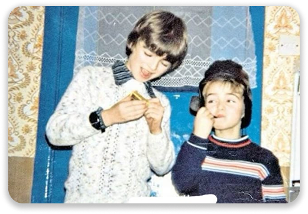
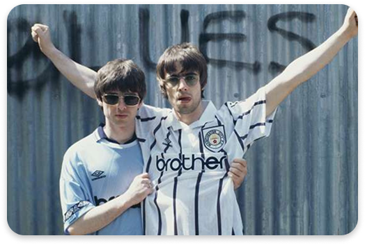
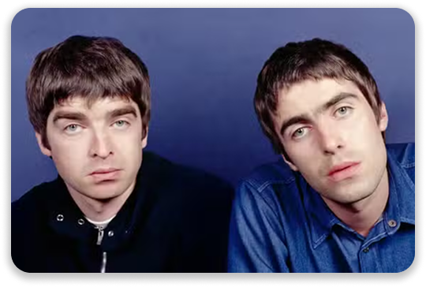
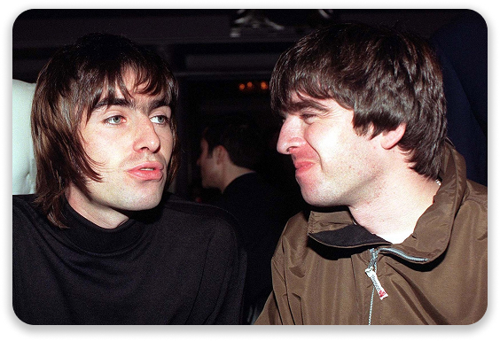
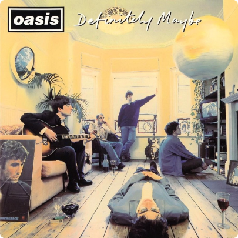
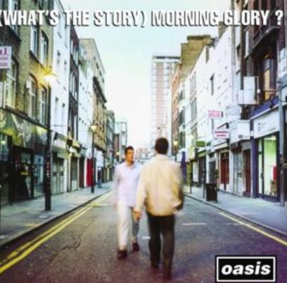
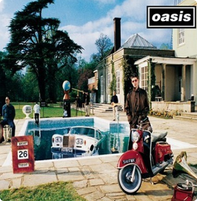

Nascidos em um lar operário no subúrbio de Manchester, Noel (1967) e Liam (1972) cresceram entre a paixão pelo futebol e as ondas do rádio. Foi na simplicidade desse cotidiano que a atitude Gallagher e a fome de conquistar o mundo começaram a ganhar forma.

Na adolescência, a música virou refúgio. Enquanto Noel, aos 13 anos, já dedilhava suas primeiras composições, o jovem Liam descobria seu carisma natural. Era o início da química explosiva que uniria o talento de um à voz do outro.

Influenciados por bandas como The Stone Roses, os irmãos absorveram a ambição das ruas de Manchester. Com Liam aos 16 e Noel aos 21, essa vivência moldou a confiança inabalável que os impulsionaria ao estrelato global.

Tudo mudou quando Liam entrou para a banda The Rain e Noel assumiu o controle das composições, rebatizando o grupo como Oasis. Após dois anos de ensaios , a banda "forçou" sua entrada em um show . Bastaram 20 minutos de palco para que o empresário Alan McGee ficasse impressionado com a atitude dos irmãos e os contratasse na mesma noite.

Álbum de estreia da banda de rock inglesa Oasis, lançado pela Creation Records em 29 de agosto de 1994.

Segundo álbum de estúdio da banda de rock britânica Oasis, lançado pela Creation Records em 2 de outubro de 1995.

Terceiro álbum de estúdio da banda britânica Oasis, lançado pela Creation Records em 21 de agosto de 1997.